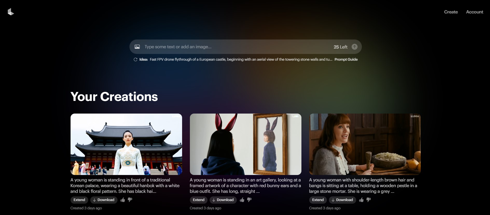

Leonardo AI 是一款先進的人工智能繪圖工具，專為藝術創作和設計而設計。利用生成對抗網絡（GAN）技術，它能生成高品質的圖片，適用於各種藝術風格和設計需求。Leonardo AI 提供多種自訂選項，讓用戶可以調整色彩、風格、細節等參數，創造出獨特的作品。其簡單易用的界面適合專業藝術家、設計師以及初學者。該工具還支持批量處理，能快速生成大量高品質圖像，顯著提高工作效率，是藝術和設計領域的理想選擇。
Luma Dream Machine

Dream Machine 是由 Luma AI 所開發的最新 AI 影片生成工具，直接將用戶輸入的文字和圖片轉成約 5 秒的影片。透過不同影片訓練，它可生成出符合物理原則、連貫且富有故事性的鏡頭，無論你是專業創作者、新手，還是僅僅對 AI 技術感興趣，都可以通過這款工具輕鬆地將你的創意轉化為現實。
Websim ai
Websim.ai 是一款先進的人工智能驅動工具，專注於網站和應用程式的用戶體驗測試。它利用 AI 模擬真實用戶的互動行為，以評估和優化網站的功能和性能。通過自動化測試，Websim.ai 能夠識別界面問題、用戶流失點和功能缺陷，並提供實用的改進建議。這款工具能夠幫助開發者和設計師在開發過程中提高網站或應用程式的質量，確保最佳的用戶體驗和操作效率。
Suno Ai
Suno AI 是一個創新的人工智能平台，專注於音頻和語音技術。它利用 AI 技術提供高品質的語音合成、語音辨識和音頻處理功能。Suno AI 允許用戶生成自然流暢的語音內容，進行語音轉文字，或優化音頻效果，適用於各種應用場景，如虛擬助手、播客、語音導航等。其智能算法能夠適應不同的語音風格和語調，提升語音交互的自然度和準確性。這使得 Suno AI 成為提升音頻體驗和開發語音應用的強大工具。
Rytr
Rytr 是一款人工智能寫作助手，旨在幫助用戶快速生成高質量的文本內容。這款工具利用先進的 AI 技術，自動生成文章、博客、廣告文案和其他寫作內容。Rytr 提供多種模板和風格選擇，適合不同類型的寫作需求。用戶只需提供簡單的提示或關鍵字，Rytr 就能生成相關內容，並且支持多語言，適合全球用戶使用。這使得 Rytr 成為提高寫作效率、創造有吸引力內容的強大助手。
Claude3.5
Claude 3.5 是一款由 Anthropic 開發的先進人工智能語言模型。它基於最新的深度學習技術，設計目的是提升自然語言處理的準確性和安全性。Claude 3.5 在理解和生成文本方面具有卓越的能力，能夠執行多種任務，包括文本生成、問答系統和語意分析。它的訓練涵蓋了廣泛的資料來源，使其在處理複雜對話和提供有用回應方面表現出色。Claude 3.5 強調倫理和安全，旨在以負責任的方式提供高品質的人工智能服務。